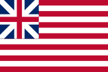
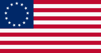
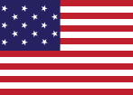
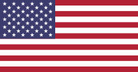
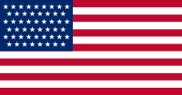

Leaflet - American Flags
The Americans like their flag. That's why I decided to introduce you to all the different versions, historical and present, of their beloved flag.
Grand Union Flag
Although this flag has never officially been the American flag, it is referred to as the "First National Flag". It was used early in the American Revolutionary War by George Washington. While resembling the flag of the British East India Company, it formed the basis for the design of the first official US flag.
Betsy Ross Flag
On June 14, 1777, the Flag Resolution was passed. It stated that the American Flag should have 13 stripes, alternative red and white, and 13 starts, white on blue ground. As the Flag Resolution did not specify any particular arrangement, several different versions have been used. One of the most famous interpretations is the Betsy Ross Flag.
15-Stripe flag
In 1795, the number of stars and stripes was increased from 13 to 15 after Vermont and Kentucky joined the union. After this change, the flag had not been changed for a longer time even though other states joined the union. This version of the flag is the one that inpired Francis Scott Key to write The Star-Spangled Banner, which is now the national anthem.
Modern Flags
In 1818, Congress passed a resolution that stated that the flag should have one star for every state, but only 13 stripes to represent the 13 original colonies. Because of this rule, the flag has changed several times until today, but the basic layout has been kept. As The Star-Spangled Banner does not mention the exact number of stars and stripes, the national anthem had not to be changed.
Future Flags
The United States Army Institute of Heraldy has prepared designs or flags with up to 56 starts, should other states join the union. Even though this seems improbable in near future, the District of Columbia might be awarded statehood. Also, Puerto Rico, which is a US Territory, might become a state.